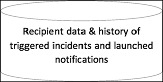
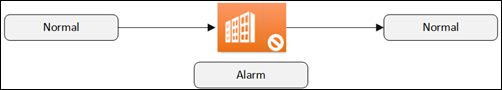
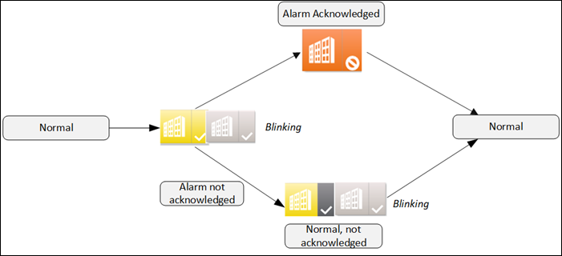
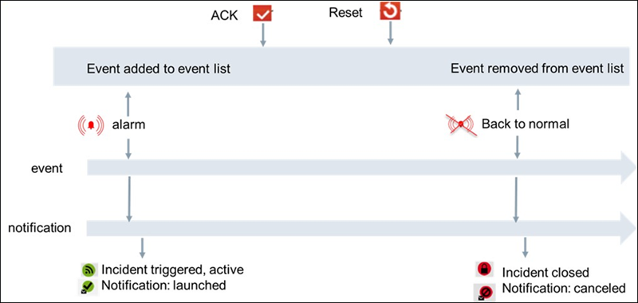

Overview of Notification
Reno and Reno plus Functionalities
Notification is a powerful and easy to use application to quickly notify Facility, Life safety or Security personal about issues in the building.
Notification comes with two functional levels, called Reno (Remote Notification), and Reno plus.
- With Reno, you can send notifications via email, SMS and pager to max. 200 persons (recipients). Reno supports basic alerting to a single person or group of persons. The Reno functionality is included in the Desigo CC standard and the compact feature set.
- In addition to Reno, Reno plus supports more than 200 recipients and advanced alerting (for example, multi-level escalation, active/inactive setting of recipients, scheduled recipients, recipient time-zones, advanced message tailoring, and so on). The Reno plus functionality needs an additional Reno plus license.
Notification Database (NDB)
The NDB is a SQL Server database and stores recipient information as name, email, phone#, and the history of triggered incidents and notifications (what notification went to whom, when), as displayed in the incident and notification browser. If you need the Reno or Reno plus functionality, then the creation of an NDB and linking it to a project are mandatory steps.
For information on creating a Notification database and linking an NDB to the project, see Creating Notification Database in Setting Up the Project and for all the Notification Database related procedures such as to Encrypt Database backup, Decrypt Encrypt Database Backup, Link NDB to the SQL Server, Unlink NDB, Delete NDB, Rename SQL Server, and Change NDB Properties, see Notification Database Procedures in Additional SMC Procedures.
NOTE: Incident templates and Notification templates are stored in the configuration database of Desigo CC and not in NDB.

To create an entire backup of a Desigo CC project, you need to backup:
- The project
- The HDB
- NDB (if Notification functionality is used)
Backups are created using Desigo CC or SMC.
Some Notification Definitions
An Incident template:
- Contains the conditions, when a specific incident will be activated
- Contains one or multiple notification templates which sent out when the incident is activated
A Notification template:
- Contains the message which is sent out
- Contains one or multiple recipients or recipient groups to whom the message is sent
A Recipient:
- Contains the name of the recipient
- Defines via which devices (Email, SMS, Pager) the recipient can be reached
A Recipient device:
Contains one or multiple devices a recipient can be reached.
Lifecycle of Events, Incidents, and Notifications
Desigo CC events can trigger Notification incidents, which launch the associated notification messages. The lifecycle of events and incidents/notifications are coupled.
In the context of Desigo CC alarming we can differentiate between simple, basic, and extended alarms. For more information on Simple Alarm, Basic Alarm, and Extended Alarm, see topic Acknowledging Different Alarm Types.
Simple Alarms
Simple alarms (or alarm objects) do not require you to acknowledge or reset. Normal operations resume when the monitored conditions (for example, dirty filter) returns to normal.

Basic Alarms
More important alarms (for example, lack of water) must be acknowledged. After eliminating the cause of the alarm state and acknowledging it, the plant operations return to normal.

Extended Alarms
In the case of extended alarm (for example, frost alarm), once the monitored state returns to normal range, resetting will return the plant to normal. This is to ensure that important alarms are not overlooked once the alarm condition clears.
When events trigger notifications the user can verify which, incidents were triggered and which notification messages were sent to whom and when. The lifecycle of events and notifications are coupled in the following way shown in the image.
- A new event triggers a notification then notification is in status launched
- When the event goes back to normal, the event disappears from the event list and the notification status is set to canceled. Depending on the search filter settings in the incident respectively. Notification-browser closed incidents and canceled notification can be displayed or hided (default = hidden). The same is valid for expired notifications.
